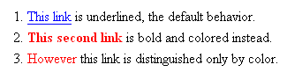
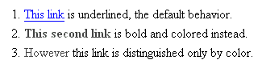

Dzieñ 12: Bezpieczne u¿ycie kolorów
Zagadnienie bezpiecznych kolorów dotyczy wielu aspektów tworzenia stron internetowych, ale skoncentrujemy siê na specyficznym przyk³adzie: tekstach linków.
Istniej± dwa potencjalne problemy z kolorami. Po pierwsze tekst linku mo¿e byæ nie wystarczaj±co kontrastowy w stosunku do koloru t³a. Dowolny bardzo jasny kolor na bia³ym tle to k³opot; tekst mo¿e po prostu "znikn±æ" w tle. Podobnie ciemny kolor na czarnym tle. To generalnie dotyczy wszystkich tekstów, nie tylko linków, ale zwracam uwagê szczególnie na nie, poniewa¿ dosyæ powszechnym zjawiskiem s± strony, na których tekst g³ówny jest co prawda czytelny, ale linki s± ca³kiem nie do rozpoznania.
Drugi potencjalny problem to wyró¿nienie linku po¶ród reszty tekstu. Je¿eli Twoje style CSS definiuj± kolor linków, powiniene¶ siê upewniæ, ¿e te linki s± równie¿ rozró¿nialne w jaki¶ inny sposób, np. pogrubione, pochy³e czy podkre¶lone. W innym przypadku tekst mo¿e byæ ca³kiem czytelny, jednak ludzie nie rozró¿niaj±cy kolorów nie bêd± w stanie stwierdziæ, ¿e akurat ten tekst jest linkiem. Taki przypadek jest opisany poni¿ej.
Kto na tym skorzysta?
Micha³ skorzysta. Poni¿ej jest przedstawiony fragment ekranu ze strony z trzema ró¿nymi sposobami oznaczenia odno¶ników:

Jak widaæ, link w pierwszym zdaniu u¿ywa standardowego wyró¿nienia, czyli w przegl±darkach graficznych jest niebieski (po odwiedzeniu fioletowy) oraz podkre¶lony. Drugi link jest oznaczony kolorem czerwonym oraz jest pogrubiony (chocia¿ nie podkre¶lony). Natomiast trzeci link jest oznaczony tylko kolorem czerwonym.
A oto ten sam fragment strony tak, jak j± widzi Micha³:

Pierwszy link jest nadal widoczny; daltonizm Micha³a (protanopia) nie dotyczy koloru niebieskiego. W drugim zdaniu czerwony kolor zanika i staje siê prawie czarny, ale link jest wci±¿ widoczny jako pogrubiony, wiêc Micha³ nadal mo¿e go dostrzec. Problem pojawia siê przy trzecim linku, który by³ wyró¿niony tylko kolorem; w sytuacji kiedy czerwieñ zanika niemal do czerni, rozró¿nienie które s³owa s± odno¶nikiem, a które zwyk³ym tekstem jest praktycznie niemo¿liwe.
Jak to zrobiæ?
Aby sprawdziæ "wystarczaj±cy kontrast" miêdzy kolorem tekstu a kolorem t³a, mo¿esz u¿yæ narzêdzi na stronie VisCheck i zasymulowaæ wygl±d Twojej strony dla czytelnika z daltonizmem.
Aby wyeliminowaæ potencjalne problemy z oznaczeniem linków, sprawd¼ styl CSS dla taga "a". Na przyk³ad, je¿eli masz poni¿sz± regu³ê w swoim arkuszu CSS, to linki s± oznaczone tylko przez zmianê koloru na czerwony, co jest niewystarczaj±ce:
a { text-decoration: none; color: red; }
Mo¿esz oczywi¶cie zostawiæ oznaczenie kolorem czerwonym, ale musisz siê równie¿ upewniæ, ¿e linki bêd± dodatkowo oznaczone jako¶ inaczej, np. pogrubione, podkre¶lone lub pochy³e. Na przyk³ad, aby linki by³y zarówno czerwone jak i pogrubione, dodaj jeszcze jedn± liniê:
a { text-decoration: none; color: red; font-weight: bold; }
Zobacz tak¿e (strony w jêzyku angielskim)
- VisCheck symuluje ró¿ne odmiany daltonizmu i umo¿liwia sprawdzenie co dok³adnie widzi na Twojej stronie czytelnik z zaburzeniem rozró¿niania kolorów. Mo¿esz sprawdziæ pojedynczy obrazek albo ca³± stronê.
- Colorblind Web Page Filter. Kolejne bardzo u¿yteczne narzêdzie pokazuj±ce dowoln± stronê po przej¶ciu przez filtry symuluj±ce najró¿niejsze zaburzenia rozpoznawania kolorów.
- Cal Henderson: Color Vision. Pokazuje paletê kolorów widzian± przez ludzi z ró¿nymi rodzajami daltonizmu.
- Ishihara Test for Color Blindness zawiera zestaw obrazów testowych, które osoby z zaburzeniami rozpoznawania koloru czerwonego i zielonego widz± inaczej, albo wcale.